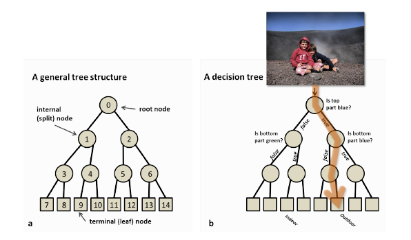
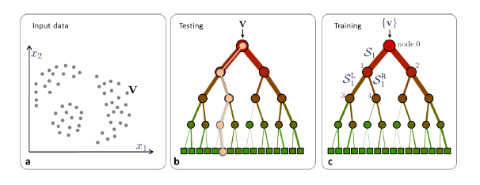
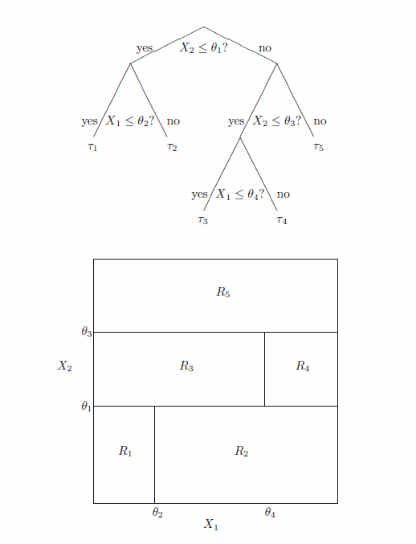
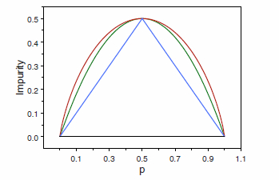
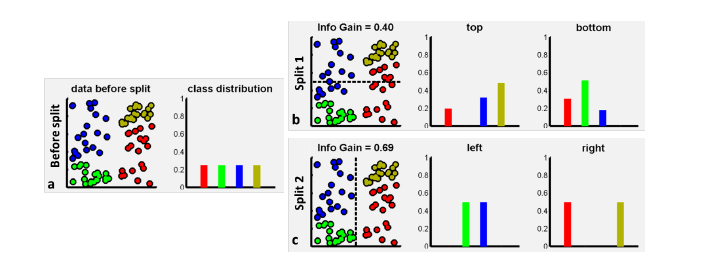
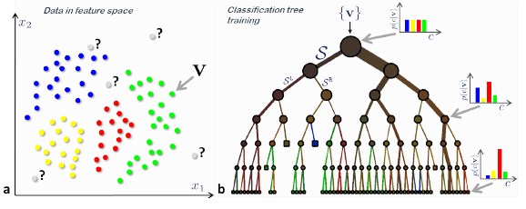

options(width=100)
if(!require("knitr")) install.packages("knitr")
library("knitr")Learning with (Decision) Trees
Introduction
Decision trees have been around for a number of years. Their recent revival is due to the discovery that ensembles of slightly different trees tend to produce much higher accuracy on previously unseen data, a phenomenon known as generalization. Ensembles of trees will be discussed but let us focus first on individual trees.
Supervised Learning
Classification and Regression are supervised learning task. Learning set is of the form: \[ \mathcal{L}=\{(\mathbf{x}_i,y_i)\}_{i=1}^n \] Classification (Two classes, binary) \[ \mathbf{x}\in\mathbb{R}^d,\qquad y\in\{-1,+1\} \] Regression \[ \mathbf{x}\in\mathbb{R}^d,\qquad y\in\mathbb{R} \]
Decision tree basics

Decision tree
We can see Fig.1.
- A tree is a set of nodes and edges organized in a hierarchical fashion. In contrast to a graph, in a tree there are no loops. Internal nodes are denoted with circles and terminal nodes with squares.
- A decision tree is a tree where each split node stores a boolean test function to be applied to the incoming data. Each leaf stores the final answer (predictor)
Training and testing decision trees

Basic notation
We can see Fig.2.
- Input data is represented as a collection of points in the \(d\)-dimensional space which are labeled by their feature responses.
- A decision tree is a hierarchical structure of connected nodes.
- Training a decision tree involves sending all training data \(\{v\}\) into the tree and optimizing the parameters of the split nodes so as to optimize a chosen cost function.
- During testing, a split (internal) node applies a test to the input data \(v\) and sends it to the appropriate child. The process is repeated until a leaf (terminal) node is reached (beige path).

Tree-Growing Procedure
We can see Fig.3.
In order to grow a classification tree, we need to answer four basic questions:
- How do we choose the Boolean conditions for splitting at each node?
- Which criterion should we use to split a parent node into its two child nodes?
- How do we decide when a node become a terminal node (i.e., stop splitting)?
- How do we assign a class to a terminal node?
Choosing the best split for a Variable
Splitting Strategies
At each node, the tree-growing algorithm has to decide on which variable it is “best” to split. We need to consider every possible split over all variables present at that node, then enumerate all possible splits, evaluate each one, and decide which is best in some sense.
For a description of splitting rules, we need to make a distinction between ordinal (or continuous) and nominal (or categorical) variables. For a continuous or ordinal variable, the number of possible splits at a given node is one fewer than the number of its distinctly observed values. Suppose that a particular categorical variable is defined by \(m\) distinct categories, there are \(2^{m-1}-1\) distinct splits.
We first need to choose the best split for a given variable. Accordingly, we have to measure of goodness of a split. Let \(C_1\),…,\(C_K\) be the \(K\geq 2\) classes. For node \(\tau\), we denote by \[ P(X\in C_k\vert \tau) \] the conditional probability that an observation \(x\) is in \(C_k\) given that it falls into the node \(\tau\).
Node information functions
We can see Fig.4
![Node impurity functions for the two-class case. The entropy function (rescaled) is the red curve, the Gini index is the green curve, and the resubstitution estimate of the misclassification rate is the blue curve. 
To choose the best split over all variables, we first need to choose the best split for a given variable. Accordingly, we define a measure of goodness of a split. For node \(\tau\), the node information function \(i(\tau)\) is definded by \[ i(\tau)=\phi\Big(p(1\vert \tau),...,p(K\vert \tau)\Big) \] where \(p(k\vert \tau)\) is an estimate of \(P(X\in C_k\vert \tau)\).
We require \(\phi\) to be a symmetric function, defined on the set of all \(K\)-tuples of probabilities \((p_1,\dots,p_k)\) with unit sum, minimized at the points \((1,0,\cdots,0)\), \((0,1,\cdots,0)\), \((0,0,\cdots,1)\), and maximized at the point \((\frac{1}{K},\frac{1}{K},\cdots,\frac{1}{K})\). One such function \(\phi\) is the entropy function, \[ i(\tau)=-\sum_{i=1}^K p(k\vert \tau)\log p(k\vert \tau) \]
An alternative to the the entropy is the Gini index, given by
\[ i(\tau)=1-\sum_{i=1}^K p(k\vert \tau)^2 \]
And the misclassification rate
\[ i(\tau)=\sum_{i=1}^K p(k\vert \tau)(1-p(k\vert \tau)) \]
Information gain

We can see Fig.5.
Suppose, at node \(\tau\) , we apply split \(s\) so that a proportion \(p_L\) of the observations drops down to the left child-node \(\tau_L\) and the remaining proportion \(p_R\) drops down to the right child-node \(\tau_R\)
The goodness of split \(s\) at node \(\tau\) is given by the reduction in impurity gained by splitting the parent node \(\tau\) into its child nodes, \(\tau_L\) and \(\tau_R\),
\[ I(s,\tau)= i(\tau)-p_L i(\tau_L)-p_R i(\tau_R) \]
The best split for the single variable \(X_j\) is the one that has the largest value of \(I(s,\tau)\) over all \(s\in\mathcal{S}_j\), the set of possible distinct splits for \(X_j\) .
Example
Consider first, the parent node \(\tau\), estimate \(P(\frac{+1}{\tau})\) by \(n_{+1}/n_{++}\) and \(P(\frac{-1}{\tau})\) by \(n_{+2}/n_{++}\), and then the estimated impurity function is: \[ i(\tau)=-\big(\frac{n_{+1}}{n_{++}}\big)\log\big(\frac{n_{+1}}{n_{++}}\big)-\big(\frac{n_{+2}}{n_{++}}\big)\log\big(\frac{n_{+2}}{n_{++}}\big) \] Note that \(i(\tau)\) is completely independent of the type of proposed split.
Now, for the child nodes, \(\tau_L\) y \(\tau_R\). We estimated \(p_L=n_{1+}/n_{++}\) and \(p_R=n_{2+}/n_{++}\)
For \(X_j\leq s\), we estimate \(P(\frac{+1}{\tau_L})=n_{11}/n_{1+}\) and \(P(\frac{-1}{\tau_L})=n_{12}/n_{1+}\) For the condition \(X_j> s\), we estimate \(P(\frac{+1}{\tau_R})=n_{21}/n_{2+}\) and \(P(\frac{-1}{\tau_R})=n_{22}/n_{2+}\). We then compute: \[ i(\tau_L)=-\big(\frac{n_{11}}{n_{1+}}\big)\log\big(\frac{n_{11}}{n_{1+}}\big)-\big(\frac{n_{12}}{n_{1+}}\big)\log\big(\frac{n_{12}}{n_{1+}}\big) \] \[ i(\tau_R)=-\big(\frac{n_{21}}{n_{2+}}\big)\log\big(\frac{n_{21}}{n_{2+}}\big)-\big(\frac{n_{22}}{n_{2+}}\big)\log\big(\frac{n_{22}}{n_{2+}}\big) \] and, then we can compute \(I(s,\tau)\).
Recursive Partitioning
Stop spliting
Plurality rule
We can see Fig.6.
How do we associate a class with a terminal node?
Suppose at terminal node \(\tau\) there are \(n(\tau)\) observations, of which \(n_k(\tau)\) are from class \(C_k\), \(k=1,...,K\). Then, the class which corresponds to the largest of the \(\{n_1(\tau),...,n_k(\tau)\}\) is assigned to \(\tau\).
This is called the plurality rule. This rule can be derived from the Bayes’s rule classifier, where we assign the node \(\tau\) to class \(C_i\) if \(p(i|\tau) = \max_k p(k|\tau)\).

Choosing the best split in Regression Trees
We now discuss the process of building a regression tree. Roughly speaking, there are two steps.
For instance, suppose that in Step 1 we obtain two regions, \(R_1\) and \(R_2\), and that the response mean of the training observations in the first region is 10, while the response mean of the training observations in the second region is 20. Then for a given observation \(X=x\), if \(x\in R_1\) we will predict a value of 10, and if \(x\in R_2\) we will predict a value of 20.
We now elaborate on Step 1 above. How do we construct the regions \(R_1,...,R_J\)? In theory, the regions could have any shape. However, we choose to divide the predictor space into high-dimensional rectangles, or boxes, for simplicity and for ease of interpretation of the resulting predictive model. The goal is to find boxes \(R_1,...,R_J\)? that minimize the RSS (Residual Sum of Squares), given by \[ \sum_{j=1}^J\sum_{i\in R_j}(y_i-\hat{y}_{R_j})^2 \]
where \(\hat{y}_{R_j}\) is the mean response for the training observations within the j-th box. Unfortunately, it is computationally infeasible to consider every possible partition of the feature space into \(J\) boxes. For this reason, we take a top-down, greedy approach that is known as recursive binary splitting. The approach is top-down because it begins at the top of the tree (at which point all observations belong to a single region) and then successively splits the predictor space; each split is indicated via two new branches further down on the tree. It is greedy because at each step of the tree-building process, the best split is made at that particular step, rather than looking ahead and picking a split that will lead to a better tree in some future step.
In order to perform recursive binary splitting, we first select the predictor \(X_j\) and the cutpoint \(s\) such that splitting the predictor space into the regions \(\{X|X_j \leq s\}\) and \(\{X|X_j > s\}\) leads to the greatest possible reduction in RSS. (The notation \(\{X|X_j \leq s\}\) means the region of predictor space in which \(X_j\) takes on a value less than \(s\)). That is, we consider all predictors \(X_1,...,X_p\), and all possible values of the cutpoint \(s\) for each of the predictors, and then choose the predictor and cutpoint such that the resulting tree has the lowest RSS. In greater detail, for any \(j\) and \(s\), we define the pair of half-planes \[ R_1(j,s)=\{X|X_j \leq s\},\qquad R_2(j,s)=\{X|X_j > s\} \] and we seek the value of \(j\) and \(s\) that minimize the equation \[\begin{equation}\label{tree1} \sum_{i:x_i\in R_1}(y_i-\hat{y}_{R_1})^2+\sum_{i:x_i\in R_2}(y_i-\hat{y}_{R_2})^2 \end{equation}\]
where \(\hat{y}_{R_1}\) is the mean response for the training observations in \(R_1(j,s)\), and \(\hat{y}_{R_2}\) is the mean response for the training observations in \(R_2(j,s)\). Finding the values of \(j\) and \(s\) that minimize (\(\ref{tree1}\)) can be done quite quickly, especially when the number of features \(p\) is not too large.
Next, we repeat the process, looking for the best predictor and best cutpoint in order to split the data further so as to minimize the RSS within each of the resulting regions. However, this time, instead of splitting the entire predictor space, we split one of the two previously identified regions. We now have three regions. Again, we look to split one of these three regions further, so as to minimize the RSS. The process continues until a stopping criterion is reached; for instance, we may continue until no region contains more than five observations.
Once the regions \(R_1,...,R_J\) have been created, we predict the response for a given test observation using the mean of the training observations in the region to which that test observation belongs.
Estimating the misclassification rate
Let \(T\) be the tree classifier and let \(\tilde{T}=\{\tau_1,\tau_2,...,\tau_L\}\) denote the set of all terminal nodes of \(T\). We can now estimate the true misclassification rate, \[\begin{equation}\label{e1} R(T)=\sum_{l=1}^LR(\tau_l)P(\tau_l), \end{equation}\] for \(T\), where \(P(\tau)\) is the probability that an observation falls into node \(\tau\) and \(R(\tau)\) is the within-node misclassification rate of an observation in node \(\tau\).
If we estimate \(R(\tau)\) by \[ r(\tau)=1-\max_kp(k|\tau) \] and we estimate \(P(\tau_l)\) by the proportion \(p(\tau_l)\) of all observations that fall into node \(\tau_l\), then, the resubstitution estimate of \(R(T)\) is
\[ \hat{R}(T)=\sum_{l=1}^Lr(\tau_l)p(\tau_l). \]
The resubstitution estimate \(\hat{R}(T)\), however, leaves much to be desired as an estimate of \(R(T)\).
First, bigger trees (i.e., more splitting) have smaller values of \(\hat{R}(T)\); that is, \(\hat{R}(T')\leq \hat{R}(T)\)), where \(T'\) is formed by splitting a terminal node of \(T\). For example, if a tree is allowed to grow until every terminal node contains only a single observation, then that node is classified by the class of that observation and \(\hat{R}(T)=0\).
Second, using only the resubstitution estimate tends to generate trees that are too big for the given data.
Third, the resubstitution estimate \(\hat{R}(T)\) is a much-too-optimistic estimate of \(R(T)\). More realistic estimates of \(R(T)\) are given below.
Tree Pruning
Since decision trees have a very high tendency to over-fit the data, a smaller tree with fewer splits might lead to increase the generalization capability. Lower variance (estimation error) at the cost of a little bias (approximation error).
One possible alternative to the process described above is to build the tree only so long as the decrease in the node impurity measure, due to each split exceeds some (high) threshold. However, due to greedy nature of the splitting algorithm, it is too short-sighted since a seemingly worthless split early on in the tree might be followed by a very good split i.e., a split that leads to a large reduction in impurity later on.
Therefore, a better strategy is to grow a very large tree \(T_0\), and then prune it back in order to obtain a subtree.
Cost complexity pruning
A sequence of trees indexed by a nonnegative tuning parameter \(\alpha\) is considered. For each value of \(\alpha\) there corresponds a subtree \(T\subset T_0\) such that the penalized misclassification rate \[ R_\alpha(T)=R(T)+\alpha|T| \] is as small as possible. Here \(|T|\) indicates the number of terminal nodes of the subtree \(T\), Think of \(\alpha|T|\) as a penalty term for tree size, so that \(R_\alpha(T)\) penalizes \(R(T)\) (\(\ref{e1}\)) for generating too large a tree. For each \(\alpha\), we then choose that subtree \(T(\alpha)\) of \(T_0\) that minimizes \(R_\alpha(T)\).
The tuning parameter \(\alpha\) controls a trade-off between the subtree’s complexity and its fit to the training data. When \(\alpha=0\), then the subtree \(T\) will simply equal \(T_0\). As \(\alpha\) increases, there is a price to pay for having a tree with many terminal nodes, and so the above equation will tend to be minimized for a smaller subtree.
Breiman et al. (1984) showed that for every \(\alpha\), there exists a unique smallest minimizing subtree.
Depending on the cost of each additional leaf (i.e. the \(\alpha\) value) different sub-trees of \(T_0\) minimise the error-complexity measure. Breiman and his colleagues proved that although \(\alpha\) can run through a continuum of values there is a sequence of pruned trees such that each element is optimal for a range of \(\alpha\), and so there is only a finite number of interesting \(\alpha\) values.
\[ 0 = \alpha_0 < \alpha_1 < \alpha_2 < \alpha_3 < \cdots < \alpha_M, \]
Furthermore, they developed an algorithm that generates a parametric family of pruned trees
\[ T_0 \prec T_1 \prec T_2 \prec T_3 \prec \cdots \prec T_M, \]
such that each \(T_i\) in the sequence is characterised by adifferent value \(\alpha_i\). They proved that each tree \(T_i\) in this sequence is optimal from the error-complexity perspective within the interval \([\alpha_i,\alpha_{i+1})\).
So far, we have constructed a finite sequence of decreasing-size subtrees \(T_1,T_2,T_3,\dots,T_M\) by pruning more and more nodes from \(T_0\). When do we stop pruning? Which subtree of the sequence do we choose as the “best” pruned subtree? Choice of the best subtree depends upon having a good estimate of the misclassification rate \(R(T_k)\) corresponding to the subtree \(T_k\). Breiman et al. (1984) offered two estimation methods: use an independent test sample or use cross-validation. When the data set is very large, use of an independent test set is straightforward and computationally efficient, and is, generally, the preferred estimation method. For smaller data sets, crossvalidation is preferred.
Advantages and disadvantages of trees
- Trees are very easy to explain to people. In fact, they are even easier to explain than linear regression!
- Some people believe that decision trees more closely mirror human decision-making than do the regression and classification approaches.
- Trees can be displayed graphically, and are easily interpreted even by a non-expert (especially if they are small).
- Trees can easily handle qualitative predictors without the need to create dummy variables.
- Unfortunately, trees generally do not have the same level of predictive accuracy as some of the other regression and classification approaches.
However, by aggregating many decision trees, using methods like bagging, random forests, and boosting, the predictive performance of trees can be substantially improved. We introduce these concepts next.
Bibliography
A. Criminisi, J. Shotton and E. Konukoglu. Decision Forests for Classification, Regression, Density Estimation, Manifold Learning and Semi-Supervised Learning. Microsoft Research technical report TR-2011-114.
The Elements of Statistical Learning: Data Mining, Inference, and Prediction. Second Edition. Springer. 2009.